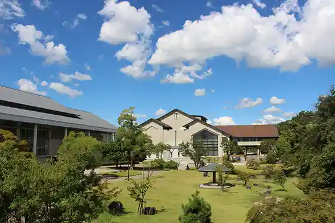
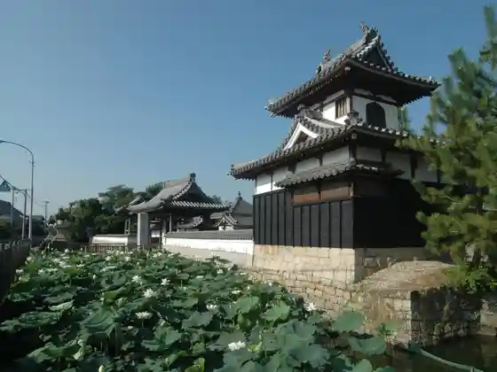
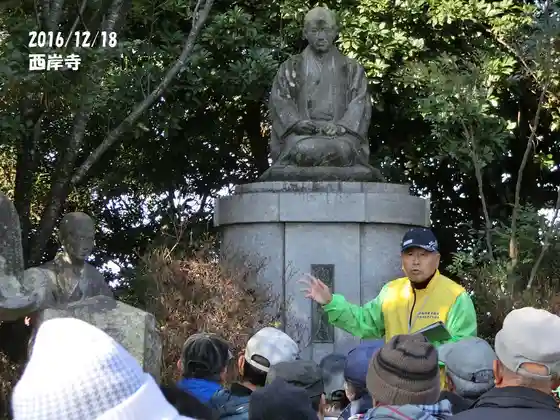

Anjo Tami Gyararii
Anjo, Aichi · 0566-77-6853 · Official / source link
Anjo History Museum
Anjo, Aichi · 0566-77-6655 · Official / source link

Honsho Tera
Anjo, Aichi · 0566-99-0221 · Official / source link

Kamisugi Shuzo
Anjo, Aichi · 0566-75-2121 · Official / source link
Anjo Furusato Gaido no Kai
Anjo, Aichi · 0566-77-5711 · Official / source link

Horiuchi Park
Anjo, Aichi · 0566-99-5947 · Official / source link
Fu Jo Mori Shrine
Anjo, Aichi · 0566-98-4825 · Official / source link
Anjo Rejapuru (Mameidoparesu)
Anjo, Aichi · 0566-92-7351 · Official / source link
Roadside Station (Den Park Anjo) (2027 Nen 3 Gatsuchu Jun Goro Made Heiten)
Anjo, Aichi · 0566-92-7111 · Official / source link
Anjo Tanabata Shrine
Anjo, Aichi · 0566-73-9511 · Official / source link
Jozan En
Anjo, Aichi · 0566-92-7780 · Official / source link
Anjo Sangyo Bunka Park Den Park
Anjo, Aichi · 0566-92-7111 · Official / source link